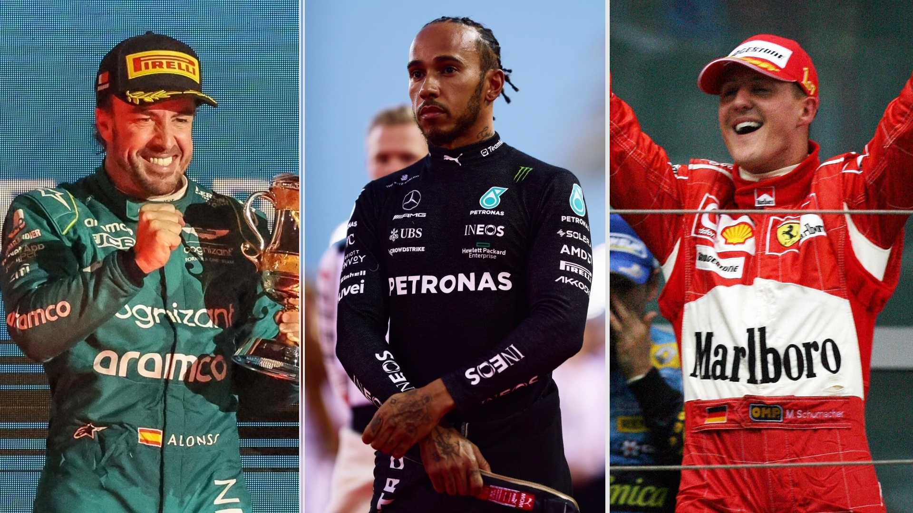

Equipos que definieron una era
A lo largo de la historia de la Fórmula 1, han existido equipos que marcaron un antes y un después. Ferrari, con más de 70 años de historia en el campeonato, es el equipo más exitoso y un icono del automovilismo, acumulando 16 campeonatos de constructores y 15 de pilotos. Desde los días de leyendas como Juan Manuel Fangio y Niki Lauda hasta la era dorada de Michael Schumacher, Ferrari ha demostrado ser un símbolo de excelencia e innovación.
Otros como McLaren, fundado en 1963, han destacado por su innovación y estilo, logrando 8 títulos de constructores y 12 de pilotos. Con figuras icónicas como Ayrton Senna y Alain Prost, McLaren ha sido sinónimo de grandes rivalidades y avances tecnológicos. Mercedes, por su parte, ha dominado la era moderna de la Fórmula 1 desde 2014, ganando 8 campeonatos de constructores consecutivos gracias a su liderazgo técnico y al talento de pilotos como Lewis Hamilton y Nico Rosberg. Finalmente, Red Bull irrumpió como una fuerza revolucionaria en la década de 2010, conquistando 4 títulos consecutivos con Sebastian Vettel y liderando una nueva era de éxitos con Max Verstappen, destacando por su enfoque innovador en aerodinámica y estrategia.
Pilotos inolvidables
Desde leyendas como Fernando Alonso, conocido por su estilo agresivo, capacidad estratégica y una carrera que abarca más de dos décadas, hasta Lewis Hamilton, el piloto con más títulos de la era moderna, quien ha redefinido la excelencia en la Fórmula 1 al acumular récords de victorias y poles. La Fórmula 1 ha sido hogar de deportistas extraordinarios que no solo han dominado las pistas, sino que también han inspirado a generaciones de aficionados. Michael Schumacher, con sus 7 títulos mundiales y una era de dominio con Ferrari, es considerado por muchos como el mejor piloto de todos los tiempos por su incansable búsqueda de la perfección y su habilidad para superar los límites. Además, nombres como Ayrton Senna, cuya pasión y habilidades bajo la lluvia lo convirtieron en un ícono eterno, y Juan Manuel Fangio, el maestro de la consistencia y precisión con 5 títulos en la década de 1950, son fundamentales en la rica historia del deporte. Estos pilotos, junto con figuras contemporáneas como Max Verstappen, quien ha llevado el automovilismo a nuevas alturas con su talento precoz y agresividad, continúan haciendo de la Fórmula 1 un espectáculo inolvidable.
